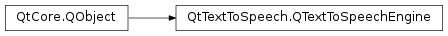

QTextToSpeechEngine¶
Synopsis¶
Virtual functions¶
Signals¶
- def
stateChanged(state)
Static functions¶
- def
createVoice(name, gender, age, data) - def
voiceData(voice)
Detailed Description¶
The
PySide2.QtTextToSpeech.QTextToSpeechEngineclass is the base for text-to-speech engine integrations.An engine implementation must derive from
PySide2.QtTextToSpeech.QTextToSpeechEngineand implement all its pure virtual methods.
-
class
PySide2.QtTextToSpeech.QTextToSpeechEngine([parent=nullptr])¶ Parameters: parent – PySide2.QtCore.QObjectConstructs the text-to-speech engine base class with
parent.
-
PySide2.QtTextToSpeech.QTextToSpeechEngine.availableLocales()¶ Return type: Implementation of
QTextToSpeech.availableLocales().
-
PySide2.QtTextToSpeech.QTextToSpeechEngine.availableVoices()¶ Return type: Implementation of
QTextToSpeech.availableVoices().
-
static
PySide2.QtTextToSpeech.QTextToSpeechEngine.createVoice(name, gender, age, data)¶ Parameters: - name – unicode
- gender –
PySide2.QtTextToSpeech.QVoice.Gender - age –
PySide2.QtTextToSpeech.QVoice.Age - data – object
Return type: Creates a voice for a text-to-speech engine.
Parameters
name,gender,ageanddataare directly stored in thePySide2.QtTextToSpeech.QVoiceinstance.
-
PySide2.QtTextToSpeech.QTextToSpeechEngine.locale()¶ Return type: PySide2.QtCore.QLocaleImplementation of
QTextToSpeech.locale().
-
PySide2.QtTextToSpeech.QTextToSpeechEngine.pause()¶ Implementation of
QTextToSpeech.pause().
-
PySide2.QtTextToSpeech.QTextToSpeechEngine.pitch()¶ Return type: PySide2.QtCore.doubleImplementation of
QTextToSpeech.pitch().
-
PySide2.QtTextToSpeech.QTextToSpeechEngine.rate()¶ Return type: PySide2.QtCore.doubleImplementation of
QTextToSpeech.rate().
-
PySide2.QtTextToSpeech.QTextToSpeechEngine.resume()¶ Implementation of
QTextToSpeech.resume().
-
PySide2.QtTextToSpeech.QTextToSpeechEngine.say(text)¶ Parameters: text – unicode Implementation of
QTextToSpeech.say(text).
-
PySide2.QtTextToSpeech.QTextToSpeechEngine.setLocale(locale)¶ Parameters: locale – PySide2.QtCore.QLocaleReturn type: PySide2.QtCore.boolImplementation
QTextToSpeech.setLocale(locale).Return
trueif the operation was successful. In this case, the current voice (as returned byPySide2.QtTextToSpeech.QTextToSpeechEngine.voice()) should also be updated to a new, valid value.
-
PySide2.QtTextToSpeech.QTextToSpeechEngine.setPitch(pitch)¶ Parameters: pitch – PySide2.QtCore.doubleReturn type: PySide2.QtCore.boolImplementation of
QTextToSpeech.setPitch(pitch).Return
trueif the operation was successful.
-
PySide2.QtTextToSpeech.QTextToSpeechEngine.setRate(rate)¶ Parameters: rate – PySide2.QtCore.doubleReturn type: PySide2.QtCore.boolImplementation of
QTextToSpeech.setRate(rate).Return
trueif the operation was successful.
-
PySide2.QtTextToSpeech.QTextToSpeechEngine.setVoice(voice)¶ Parameters: voice – PySide2.QtTextToSpeech.QVoiceReturn type: PySide2.QtCore.boolImplementation of
QTextToSpeech.setVoice(voice).Return
trueif the operation was successful.
-
PySide2.QtTextToSpeech.QTextToSpeechEngine.setVolume(volume)¶ Parameters: volume – PySide2.QtCore.doubleReturn type: PySide2.QtCore.boolImplementation of
QTextToSpeech.setVolume(volume).Return
trueif the operation was successful.
-
PySide2.QtTextToSpeech.QTextToSpeechEngine.state()¶ Return type: PySide2.QtTextToSpeech.QTextToSpeech.StateImplementation of
QTextToSpeech.state().
-
PySide2.QtTextToSpeech.QTextToSpeechEngine.stateChanged(state)¶ Parameters: state – PySide2.QtTextToSpeech.QTextToSpeech.State
-
PySide2.QtTextToSpeech.QTextToSpeechEngine.stop()¶ Implementation of
QTextToSpeech.stop().
-
PySide2.QtTextToSpeech.QTextToSpeechEngine.voice()¶ Return type: PySide2.QtTextToSpeech.QVoiceImplementation of
QTextToSpeech.voice().
-
static
PySide2.QtTextToSpeech.QTextToSpeechEngine.voiceData(voice)¶ Parameters: voice – PySide2.QtTextToSpeech.QVoiceReturn type: object Returns the engine-specific private data for the given
voice.
-
PySide2.QtTextToSpeech.QTextToSpeechEngine.volume()¶ Return type: PySide2.QtCore.doubleImplementation of
QTextToSpeech.volume().
© 2018 The Qt Company Ltd. Documentation contributions included herein are the copyrights of their respective owners. The documentation provided herein is licensed under the terms of the GNU Free Documentation License version 1.3 as published by the Free Software Foundation. Qt and respective logos are trademarks of The Qt Company Ltd. in Finland and/or other countries worldwide. All other trademarks are property of their respective owners.